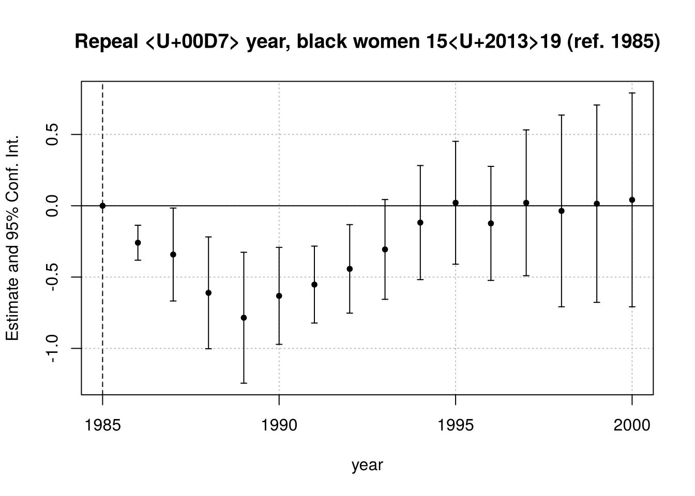
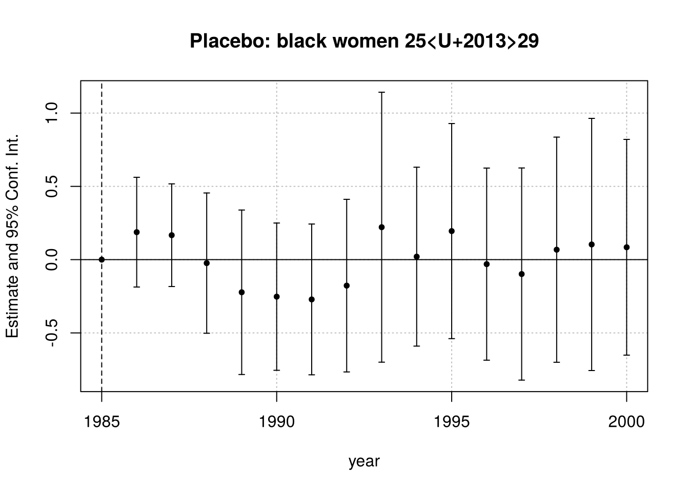
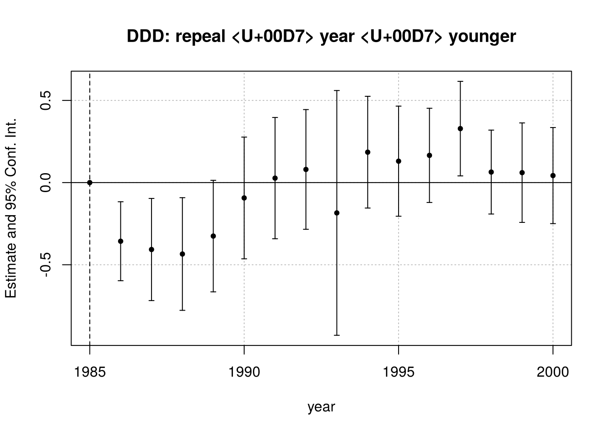
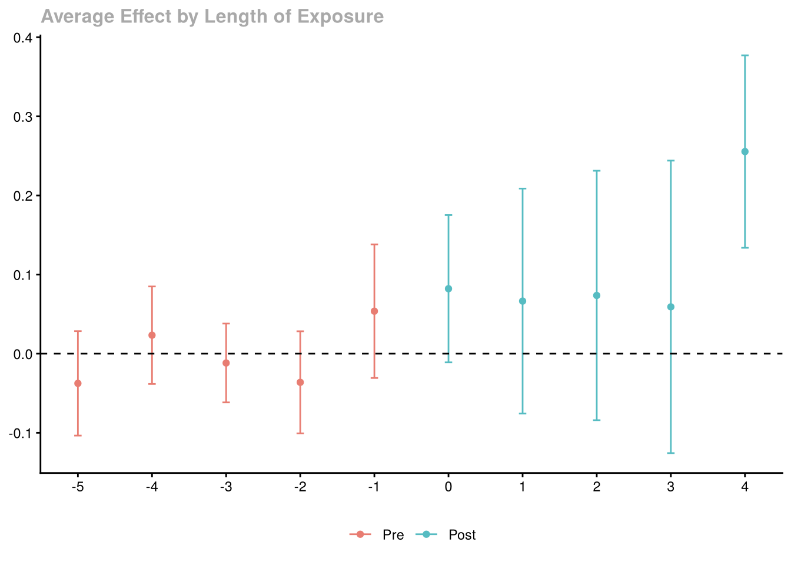

Participants should be able to estimate and plot an event study and read pre-trends and dynamics off it, build a triple-difference with a placebo cohort, run a two-way fixed-effects (TWFE) difference-in-differences (DiD) with staggered adoption and explain why it is a weighted average of 2×2 comparisons — some of which use already-treated units as controls — and know what the modern estimators (Callaway–Sant’Anna, Sun–Abraham) do differently.
Time
Block
0:00
Recap: the 2×2 and parallel trends
0:05
Concepts: event studies and leads; placebos and triple differences; staggered TWFE and the Bacon decomposition
0:20
Walkthrough: abortion legalization event study and DDD; castle doctrine TWFE; decompose it
0:45
Exercise 1 kickoff
0:55
Assign exercises; preview synthetic control
Key ideas
Event studies. With many periods, replace the single \(\text{Treat} \times \text{Post}\) with a full set of \(\text{Treat} \times \text{Year}\) interactions (omitting one reference year). The leads (pre-treatment interactions) should be near zero if parallel trends is plausible; the lags trace the dynamic effect. Passing a pre-trends test is not proof of parallel trends — the counterfactual is still unobserved — but failing it is close to disqualifying.
In plain English
Instead of one “after” effect, estimate a separate effect for every year: three years before the policy, two years before, the year of, the year after, and so on. The years before the policy are a sanity check — if the treated group was already pulling away before anything happened, the design is in trouble. The years after show the effect building or fading.
Placebos and triple differences (DDD). If theory says an effect should show up only for a specific group, cohort, or window, estimate the same model where it should not and demand a null. A DDD nets the placebo group’s DiD out of the treated group’s DiD, absorbing group-specific shocks that a plain DiD would attribute to treatment.
In plain English
A placebo test runs your analysis somewhere the policy couldn’t possibly have mattered — an older age group, a different outcome — and checks that you find nothing. A triple difference goes one step further and subtracts that placebo result from the real one, so anything weird that happened in those states in those years, affecting everyone, gets cancelled out.
The abortion study.Roe v. Wade legalized abortion nationally in 1973; five states had repealed their bans in 1970. Cohorts born 1971–1973 in repeal states were “treated” three years earlier than the rest of the country. If legalization reduced the share of unwanted births, those cohorts should show lower gonorrhea incidence as 15–19 year olds in 1986–1992, with the effect tracing a parabola as the treated cohort moves into and out of the age bracket. The placebo is 25–29 year olds in the same states.
Staggered adoption and two-way fixed effects (TWFE). With treatment switching on at different times for different units, the TWFE coefficient (unit fixed effects plus year fixed effects) is a variance-weighted average of every 2×2 DiD in the data (Goodman-Bacon 2021): early vs never-treated, late vs never-treated, early vs late (before late is treated), and late vs early (after early is treated). In that last type the “control” is already treated; if effects grow over time, its trend is contaminated and the 2×2 is biased — sometimes to the wrong sign. The decomposition tells you how much weight these comparisons get.
In plain English
When states adopt a law in different years, the standard regression quietly runs every possible two-group comparison and averages them. Some of those comparisons use a state that already has the law as the “control” for a state that is just getting it. If the law’s effect grows over time, the early state’s growing effect looks like a trend, gets subtracted, and the estimate shrinks or even flips sign. The Bacon decomposition shows you how much of your estimate rests on those bad comparisons.
Modern estimators. Callaway and Sant’Anna estimate each cohort-by-time average treatment effect on the treated (ATT) using only never-treated or not-yet-treated controls and aggregate them with transparent weights. Sun and Abraham do the analogous thing within an interaction-weighted event-study regression. Both avoid the forbidden comparisons; both need a clean control group.
In plain English
The newer methods just refuse to use already-treated units as a comparison group. They compare each adopting cohort to units that haven’t adopted yet (or never will), one period at a time, and then average those clean comparisons however you like. If you have plenty of never-treated units, they agree with the standard regression; if you don’t, they can differ a lot.
Walkthrough
Step 1 — Abortion legalization: the DD event study
Black women aged 15–19; log gonorrhea rate; repeal marks the five early-repeal states. The reference year is 1985; controls and population weights follow the paper.
iplot(dd, main ="Repeal × year, black women 15–19 (ref. 1985)")

Coefficients ≈ −0.26, −0.34, −0.61, −0.79, −0.63, −0.55, −0.44 for 1986–1992, then shrinking to ≈ −0.3, −0.1 and hovering near zero (with wide CIs) from 1995 on. The parabola is the signature the theory predicted: effect builds as treated cohorts enter the 15–19 bracket, peaks around 1989, and fades as they age out. (fixest::i() produces the same interactions as the hand-built dummies.)
Step 2 — The placebo cohort and the DDD
Run the same event study for black women aged 25–29, who were born before legalization anywhere. Then stack both cohorts and estimate the triple difference: repeal × year × younger.
bf25 <- ab %>%filter(sex ==2, race ==2, age ==25)placebo <-feols(lnr ~i(year, repeal, ref =1985) + acc + ir + pi + alcohol + crack + poverty + income + ur | fip + year,data = bf25, weights =~totpop, cluster =~fip)iplot(placebo, main ="Placebo: black women 25–29")

both <- ab %>%filter(sex ==2, race ==2, age %in%c(15, 25)) %>%mutate(younger =as.integer(age ==15), repeal_young = repeal * younger,fip_young =paste(fip, younger))ddd <-feols(lnr ~i(year, repeal, ref =1985) +i(year, repeal_young, ref =1985) +i(year, younger, ref =1985) + acc + ir + pi + alcohol + crack + poverty + income + ur | fip_young + year,data = both, weights =~totpop, cluster =~fip)iplot(ddd, i.select =2, main ="DDD: repeal × year × younger")

The 25–29 placebo shows no parabola in 1986–1989 (coefficients of about +0.2, +0.2, 0, −0.2 with SEs around 0.2–0.3). The DDD coefficients are ≈ −0.36, −0.41, −0.44, −0.33 for 1986–1989, then ≈ −0.09 in 1990 and statistically zero thereafter. The treated-cohort effect survives netting out whatever happened to older women in the same states.
Step 3 — Castle doctrine: TWFE with staggered adoption
States adopted “stand your ground” laws between 2005 and 2010. The book’s regression: log homicide rate on post, state and year fixed effects, population weights, clustered by state.
# A tibble: 6 x 2
g n
<dbl> <int>
1 0 29
2 2006 1
3 2007 13
4 2008 4
5 2009 2
6 2010 1
post ≈ 0.076 (SE 0.035): castle-doctrine laws are associated with about 8% more homicides. Adoption timing: 29 never-treated states, 1 in 2006, 13 in 2007, 4 in 2008, 2 in 2009, 1 in 2010. (post is fractional in adoption years; D is its binary version for the decomposition.)
Step 4 — Decompose the TWFE estimate into its 2×2s
The exact Goodman-Bacon decomposition needs a balanced panel, a binary treatment and no weights, so this step uses the unweighted binary version. In R, bacondecomp does it in one line; in Python we compute the 2×2 estimates and their weights by hand from the paper’s formulas.
years =sorted(castle.year.unique())base = smf.ols("l_homicide ~ D + C(sid) + C(year)", data=castle).fit()print("unweighted binary TWFE:", base.params["D"].round(4))
unweighted binary TWFE: 0.0694
n = castle.groupby("g").sid.nunique() / castle.sid.nunique() # group sharesDbar = {g: (np.array(years) >= g).mean() if g >0else0for g in n.index} # share of periods treateddef dd_2x2(sub):"""TWFE on a two-group subsample = the 2x2 DD for that comparison.""" s = sub.copy()for v in ["D", "l_homicide"]: s[v +"_t"] = s[v] - s.groupby("sid")[v].transform("mean") - s.groupby("year")[v].transform("mean") + s[v].mean()return (s.D_t * s.l_homicide_t).sum() / (s.D_t **2).sum()rows = []G = [g for g in n.index if g >0]for k in G: rows.append((k, "never-treated", dd_2x2(castle[castle.g.isin([k, 0])]), n[k] * n[0] * Dbar[k] * (1- Dbar[k])))for l in G:if l <= k: continue nkl = n[k] / (n[k] + n[l])# k treated earlier; l (not yet treated) is the control in years before l adopts s_kl = ((n[k] + n[l]) * (1- Dbar[l]))**2* nkl * (1- nkl) * (Dbar[k] - Dbar[l]) / (1- Dbar[l]) * (1- Dbar[k]) / (1- Dbar[l]) rows.append((k, f"later-treated ({l}) as control", dd_2x2(castle[castle.g.isin([k, l]) & (castle.year < l)]), s_kl))# l treated later; k (already treated) is the control in years from k's adoption on s_lk = ((n[k] + n[l]) * Dbar[k])**2* nkl * (1- nkl) * Dbar[l] / Dbar[k] * (Dbar[k] - Dbar[l]) / Dbar[k] rows.append((l, f"earlier-treated ({k}) as control", dd_2x2(castle[castle.g.isin([k, l]) & (castle.year >= k)]), s_lk))bacon = pd.DataFrame(rows, columns=["treated", "control", "dd", "s"])bacon["weight"] = bacon.s / bacon.s.sum()bacon["type"] = bacon.control.str.split(" ").str[0]print(bacon.sort_values("weight", ascending=False).head(8).round(3))
treated control ... weight type
9 2007 never-treated ... 0.610 never-treated
16 2008 never-treated ... 0.161 never-treated
21 2009 never-treated ... 0.060 never-treated
0 2006 never-treated ... 0.050 never-treated
10 2007 later-treated (2008) as control ... 0.021 later-treated
12 2007 later-treated (2009) as control ... 0.021 later-treated
24 2010 never-treated ... 0.017 never-treated
14 2007 later-treated (2010) as control ... 0.016 later-treated
[8 rows x 6 columns]
print("weighted sum of 2x2s:", (bacon.weight * bacon.dd).sum().round(4))
library(bacondecomp)castle <-mutate(castle, D =as.integer(post >0))bd <-bacon(l_homicide ~ D, data = castle, id_var ="sid", time_var ="year")
type weight avg_est
1 Earlier vs Later Treated 0.07708 -0.02858
2 Later vs Earlier Treated 0.02411 0.04563
3 Treated vs Untreated 0.89881 0.07844
# prints the weight and average estimate by comparison typebd %>%group_by(type) %>%summarise(avg_est =sum(estimate * weight) /sum(weight), weight =sum(weight))
# A tibble: 3 x 3
type avg_est weight
<chr> <dbl> <dbl>
1 Earlier vs Later Treated -0.0286 0.0771
2 Later vs Earlier Treated 0.0456 0.0241
3 Treated vs Untreated 0.0784 0.899
Unweighted binary TWFE ≈ 0.069, and the weighted sum of the 25 two-by-twos reproduces it exactly. About 90% of the weight is on treated-vs-never-treated comparisons (average 2×2 ≈ 0.078); 8% on “later-treated as control” (average ≈ −0.03); and 2% on the forbidden “earlier-treated as control” comparisons (≈ 0.05). With 29 never-treated states the TWFE estimate is safe here. That is a property of this dataset, not of TWFE.
# Option A: an event study in event time, with never-treated states as the pure controlscs2 = castle.copy()cs2["rel"] = (cs2.year - cs2.g).clip(-5, 4) # event time, binned at the endsfor k inrange(-5, 5):if k ==-1: continue# reference period cs2[f"ev_{'m'if k <0else'p'}{abs(k)}"] = ((cs2.g >0) & (cs2.rel == k)).astype(int)ev = [c for c in cs2.columns if c.startswith("ev_")]es = smf.wls("l_homicide ~ "+" + ".join(ev) +" + C(sid) + C(year)", data=cs2, weights=cs2.popwt)\ .fit(cov_type="cluster", cov_kwds={"groups": cs2["sid"]})print(pd.DataFrame({"coef": es.params[ev], "se": es.bse[ev]}).round(3))
# Option B: Callaway–Sant'Anna via the `csdid` or `differences` packages (pip install differences)# from differences import ATTgt# att = ATTgt(data=castle.set_index(["sid", "year"]), cohort_name="g").fit(formula="l_homicide")# att.aggregate("event")
Call:
aggte(MP = att, type = "dynamic", min_e = -5, max_e = 4)
Reference: Callaway, Brantly and Pedro H.C. Sant'Anna. "Difference-in-Differences with Multiple Time Periods." Journal of Econometrics, Vol. 225, No. 2, pp. 200-230, 2021. <https://doi.org/10.1016/j.jeconom.2020.12.001>, <https://arxiv.org/abs/1803.09015>
Overall summary of ATT's based on event-study/dynamic aggregation:
ATT Std. Error [ 95% Conf. Int.]
0.1074 0.0443 0.0206 0.1941 *
Dynamic Effects:
Event time Estimate Std. Error [95% Simult. Conf. Band]
-5 -0.0375 0.0282 -0.1035 0.0285
-4 0.0233 0.0264 -0.0382 0.0849
-3 -0.0118 0.0213 -0.0616 0.0380
-2 -0.0362 0.0276 -0.1007 0.0283
-1 0.0537 0.0361 -0.0307 0.1382
0 0.0821 0.0398 -0.0110 0.1752
1 0.0665 0.0609 -0.0757 0.2087
2 0.0736 0.0675 -0.0840 0.2312
3 0.0592 0.0791 -0.1257 0.2440
4 0.2555 0.0521 0.1338 0.3771 *
---
Signif. codes: `*' confidence band does not cover 0
Control Group: Never Treated, Anticipation Periods: 0
Estimation Method: Doubly Robust

aggte(att, type ="simple")
Call:
aggte(MP = att, type = "simple")
Reference: Callaway, Brantly and Pedro H.C. Sant'Anna. "Difference-in-Differences with Multiple Time Periods." Journal of Econometrics, Vol. 225, No. 2, pp. 200-230, 2021. <https://doi.org/10.1016/j.jeconom.2020.12.001>, <https://arxiv.org/abs/1803.09015>
ATT Std. Error [ 95% Conf. Int.]
0.0785 0.0593 -0.0378 0.1948
---
Signif. codes: `*' confidence band does not cover 0
Control Group: Never Treated, Anticipation Periods: 0
Estimation Method: Doubly Robust
The event-study leads are ≈ 0.00, 0.01, −0.01, −0.05 (SEs ≈ 0.04): flat. The lags are ≈ 0.08, 0.07, 0.06, 0.04, 0.10 for event years 0–4, each with standard error (SE) 0.03–0.07. Callaway–Sant’Anna’s simple aggregate ATT is ≈ 0.079 (SE 0.06), essentially the TWFE number, as the Bacon decomposition predicted; its event-study aggregate is ≈ 0.11 with leads within ±0.05 of zero. The point of running it is not a different answer here; it is that you would have known if TWFE had gone wrong.
Exercises
Reference year. Re-run Step 1 with 1990 as the omitted year instead of 1985. The coefficients change; the figure’s shape does not. Explain precisely what each coefficient now measures and why the pre-period “pre-trends test” is now meaningless.
Break TWFE. Simulate 40 units × 10 periods with two cohorts treated at \(t = 4\) and \(t = 7\), no never-treated units, and an effect that grows by 0.5 per period after adoption. Estimate TWFE and the Bacon decomposition. Then add 20 never-treated units and repeat. Report what happens to the “earlier-treated as control” weight and the sign of the TWFE estimate.
Placebo outcome. Castle-doctrine laws should not affect, say, larceny (l_larceny) or motor-vehicle theft (l_motor) through self-defense incentives. Run the Step 3 TWFE on those outcomes. What do you find, and how does it bear on the parallel-trends assumption for homicide?
Solutions
Solutions (click to expand)
1. Each coefficient is now the repeal-vs-Roe gap in year \(t\)relative to the gap in 1990. Since 1990 is mid-treatment, the “pre-period” coefficients for 1986–1989 are differences between two treated years and no longer test for differential pre-trends; the only clean reference is a year before anyone was treated.
2. With no never-treated units and growing effects, the late-vs-early comparisons receive substantial weight and have negative 2×2 estimates (the early cohort’s growing effect is differenced out as a “trend”); TWFE badly understates the true average effect (in the simulation below the true average effect among treated observations is 1.5, TWFE gives ≈ 0.35 with no never-treated units) and can flip sign when the dynamic is steep. Adding 20 never-treated units pulls TWFE to ≈ 0.9 — better, still biased, because the forbidden comparisons still get weight; a Callaway–Sant’Anna aggregate would recover 1.5.
rng = np.random.default_rng(0)def panel(n_never): units = [(i, 4) for i inrange(20)] + [(i, 7) for i inrange(20, 40)] + [(i, 0) for i inrange(40, 40+ n_never)] rows = [(i, g, t, (g >0and t >= g) * (t - g +1) *0.5+ rng.normal()) for i, g in units for t inrange(10)] df = pd.DataFrame(rows, columns=["sid", "g", "year", "l_homicide"]) df["D"] = ((df.g >0) & (df.year >= df.g)).astype(int)return dffor n_never in [0, 20]: df = panel(n_never)print(n_never, smf.ols("l_homicide ~ D + C(sid) + C(year)", df).fit().params["D"].round(3))# then re-run the Step 4 decomposition on `df`
3.l_larceny: ≈ 0.00 (SE 0.015); l_motor: ≈ 0.04 (SE 0.05). Both small and insignificant. That supports the claim that adopting states were not simply on a different crime trajectory; it does not prove parallel trends for homicide, but it rules out one broad alternative.
Facilitator notes
Facilitator notes (click to expand)
The event-study figure is the deliverable. Make sure every participant can produce Step 1’s plot and read it: leads, reference year, dynamics, confidence band. Everything in modern DiD is a conversation about that picture.
Misconception: flat pre-trends prove parallel trends. They make it more plausible. The counterfactual post-period trend is unobserved, full stop. Use the DDD to show what further evidence looks like.
Misconception: TWFE is “wrong.” It is a weighted average with weights you did not choose. With a big never-treated group it is fine (Step 4). Without one, it can be badly wrong (Exercise 2). The decomposition is how you tell.
On the Python decomposition. It follows Goodman-Bacon (2021) Theorem 1 and reproduces the TWFE coefficient to four decimals; that equality is the check that the code is right. It assumes a balanced panel, binary treatment and no weights, which is why Step 4 switches to the unweighted D.
If running short. Do Steps 1, 3 and 4; assign Step 2 as the first exercise.
Discussion prompts. (a) In the abortion study, what would a SUTVA violation look like, and why does it argue for 25–29 rather than 20–24 as the placebo? (b) Why can Callaway–Sant’Anna not help you if every unit is eventually treated at nearly the same time?
Bridge to next session. DiD needs a control group whose trend you trust. Synthetic control builds one — a weighted combination of donors chosen to match the treated unit’s pre-period — and makes inference by placebo.